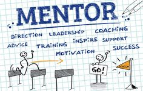

Daftar Artikel
Tantangan yang sering dihadapi saat belajar pemrograman
"Mulailah dengan bahasa pemrograman yang populer dan mudah dipelajari, seperti Python. Setelah merasa nyaman, lanjutkan ke bahasa lainnya sesuai kebutuhan proyek atau spesialisasi yang ingin Anda tekuni. Dan ayo semnagat untuk belajar, jangan pernah menyerah"

Belajar dari Kegagalan: Refleksi Seorang Mahasiswa Teknik
"Success is not final, failure is not fatal: It is the courage to continue that counts."-Winston S. Churchill"

Mentoring yang Mengubah Hidupku
"A mentor is someone who allows you to see the hope inside yourself."
 Baca sumber referensi